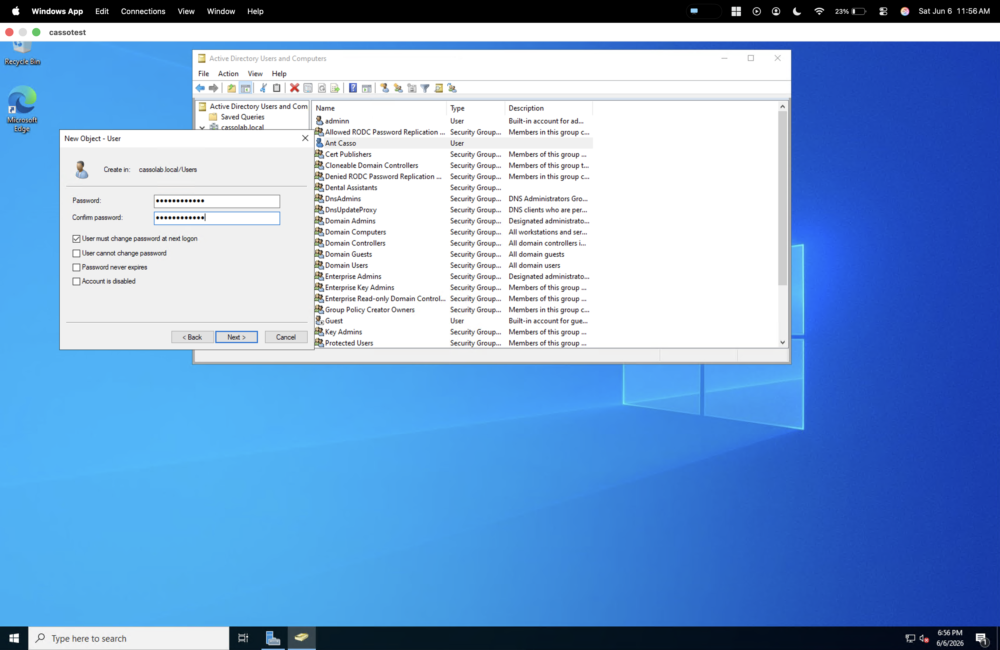
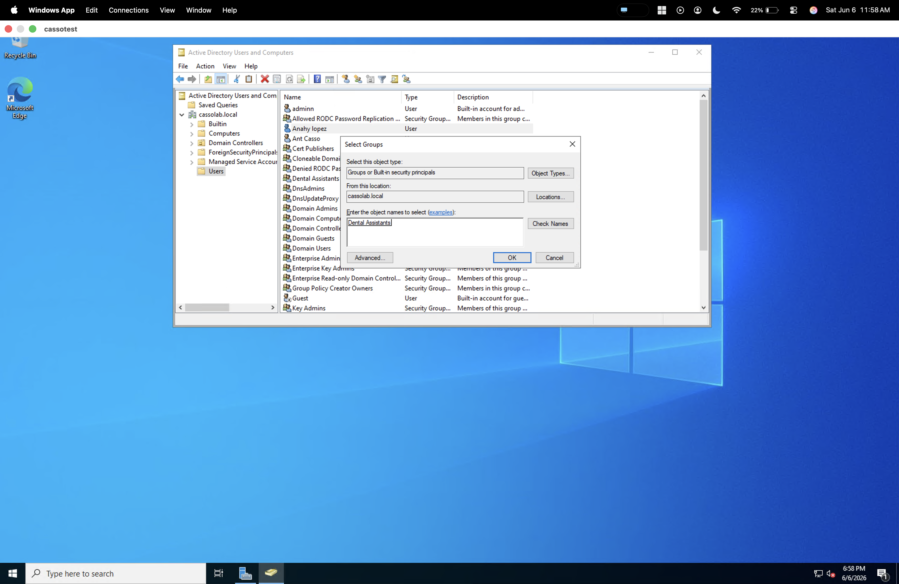
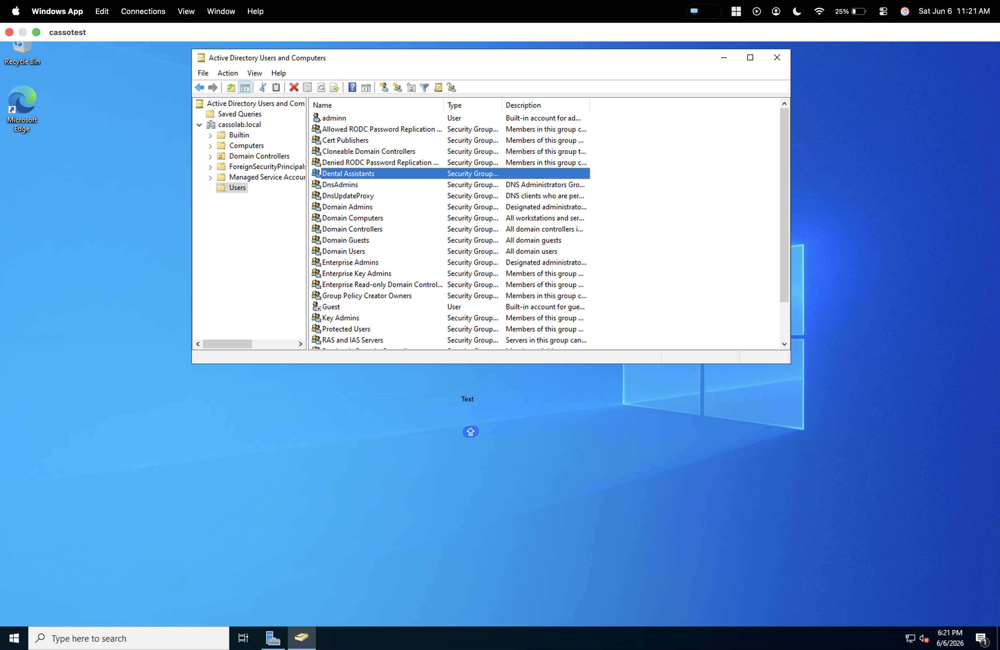
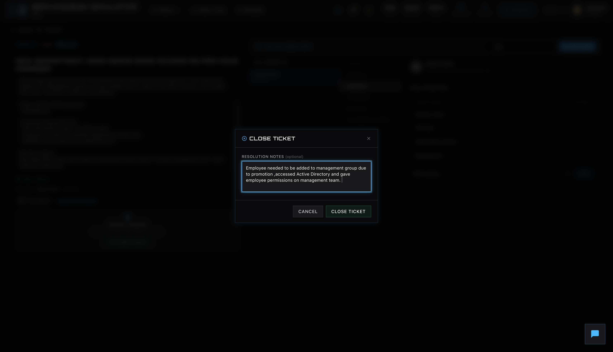

User account creation
Created a new user account in Active Directory Users and Computers and configured password options as part of a standard provisioning workflow.
This page highlights practical examples from a Windows lab environment and support simulations, starting with Active Directory user and group management and followed by a ServiceDesk Simulator ticket scenario.
These examples come from a Windows-based Active Directory lab and show user account management, security group assignment, and directory review using Active Directory Users and Computers.

Created a new user account in Active Directory Users and Computers and configured password options as part of a standard provisioning workflow.

Assigned a user to the appropriate security group to align access with role requirements and demonstrate group-based access control.

Reviewed domain groups and related objects in Active Directory Users and Computers to confirm available groups and verify directory structure.
These examples focus on foundational directory and access tasks that are common in support and systems roles.
The ServiceDesk Simulator scenario highlights queue review, user verification, access changes, and clear resolution notes in a structured ticketing environment.
This scenario walks through a realistic incident in ServiceDesk Simulator, from ticket queue to user review in an Active Directory-style view, group assignment, and final closure notes.

Reviewed the ticket hub to identify a high-priority incident where a new department head needed the same access as the previous manager.

Opened the incident and used the user view to confirm the employee’s identity, department, and existing access before making any changes.

Added the user to the appropriate management group so they could approve budget reports, purchase requests, and manage their team.

Documented the change and closed the ticket with clear resolution notes describing why access was updated and how the request was resolved.